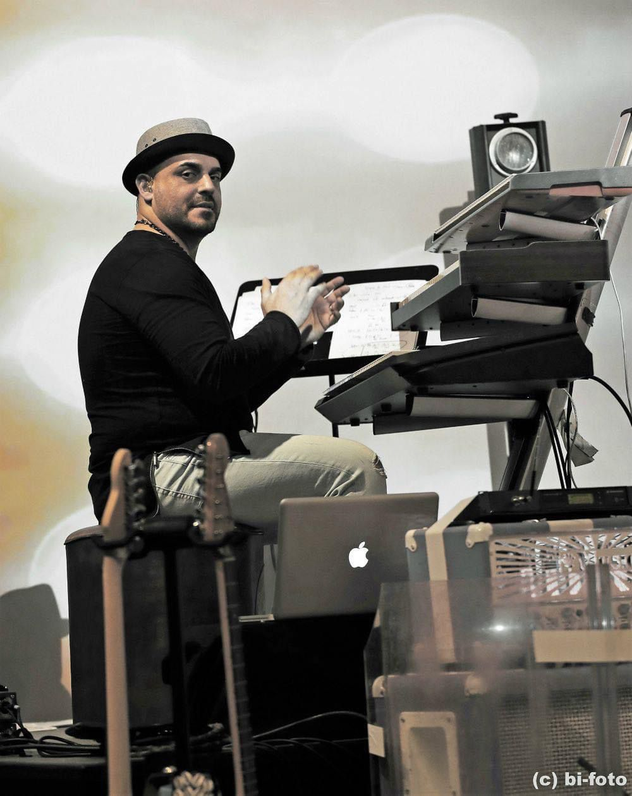
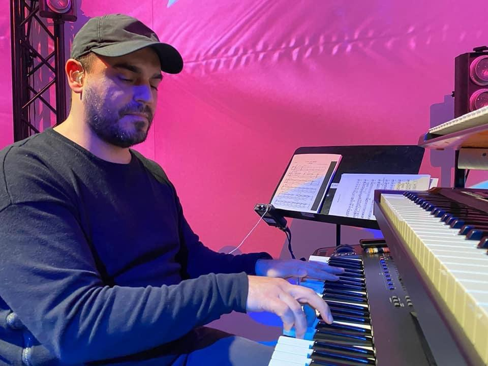
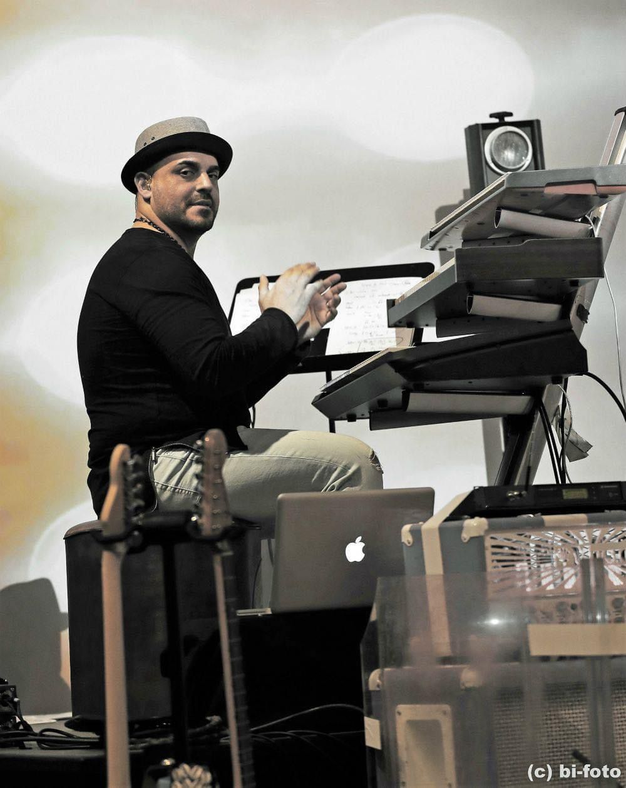
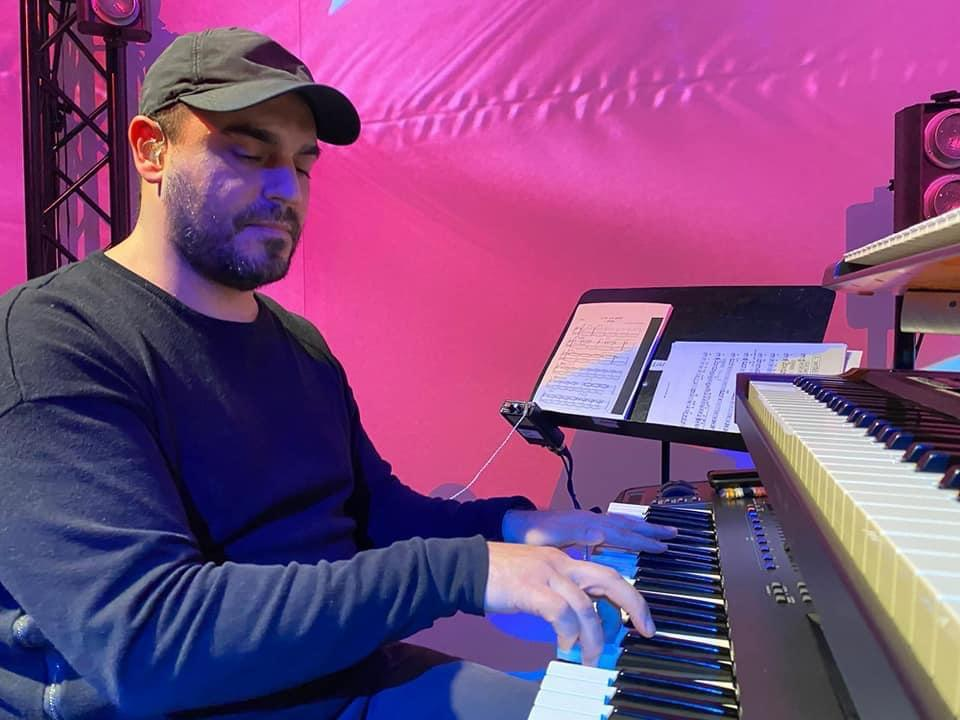

Biografie von Gerry Luppolo - Keyboarder und Produzent. Geboren am 3. Juli 1978 in Mettmann, Düsseldorf, wuchs Gerry Luppolo in einer musikalischen Familie auf. Schon früh zeigte sich seine Leidenschaft für die Musik, inspiriert von seinem Vater, der selbst als Musiker tätig war. Mit elf Jahren begann er seine musikalische Ausbildung am Klavier am Konservatorium in Karlsruhe, merkte jedoch bald, dass seine wahre Leidenschaft im Pop-, Fusion- und Rockbereich lag. Große musikalische Vorbilder wie David David Paich von Toto, die Yellowjackets und die Electric Band prägten seinen Stil. Während seiner Jugend engagierte er sich in der christlichen Gospelszene und lernte dort das Bühnenleben von Grund auf kennen. Nach dem Abitur studierte er Tonstudio-Ingenieurwesen in Frankfurt, brach das Studium jedoch ab, um eine europaweite Endorsement-Partnerschaft mit Casio anzunehmen. In dieser Zeit sammelte er wertvolle Erfahrungen als Musiker und spielte mit seiner italienischen Band Casanostra, die mehrere renommierte Preise wie den Wolle Kriwanek-Preis und den Radio Hit Radio Antenne 1 Newcomer Award gewann und auf viele Festivals war. Im Laufe seiner Karriere trat er mit namhaften Künstlern wie Udo Lindenberg und den Weather Girls auf und arbeitete als Produzent für diverse Projekte, darunter ein Album f ür Marla Glen. Seit 2013 ist er festes Mitglied der Band Labana (Band von Lou Bega, Mambo Nr 5 ) und setzt seine musikalische Reise mit zahlreichen Rockproduktionen und Bühnenauftritten fort. Mit tiefem Dank und Demut genießt er bis heute das Privileg, seine Liebe zur Musik auf der Bühne zu sein. Gerry ist ein fester Bestandteil der Holokaan Band und wirkte bei Folgen Songs mit.: Travel To Mars, Just In Japan und Anthem. Sein Gefühl für die Musik ist beeindruckend. Er gab den Songs eine einzigartige Fülle und Tiefsinn.
 


